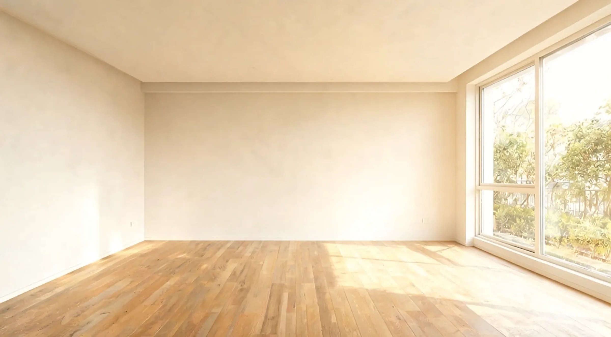
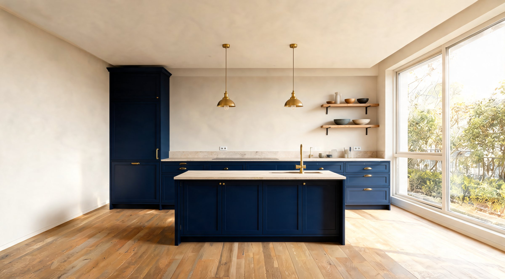
Handmade kitchens · Norwich
A kitchen made for your room.
We start with an empty space and build a kitchen that could only ever belong there.
Made in our Norwich workshop. Fitted by our own fitters.
Scroll
Same kitchen, your colour
Make it yours.
Every Wrenfold kitchen is painted or oiled by hand. Try the four finishes our clients choose most.
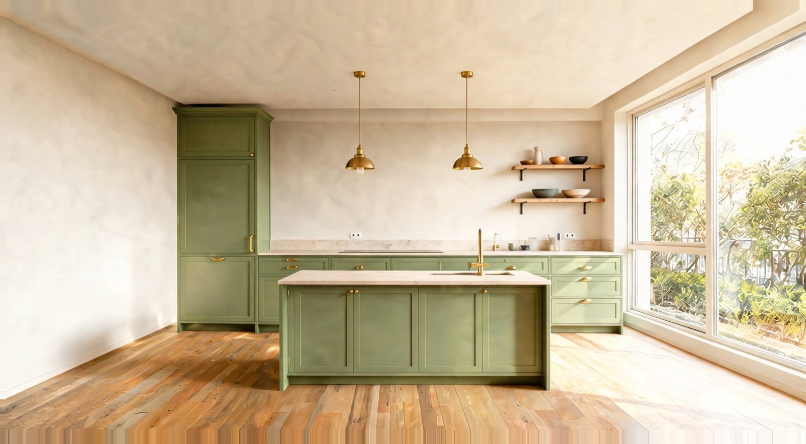
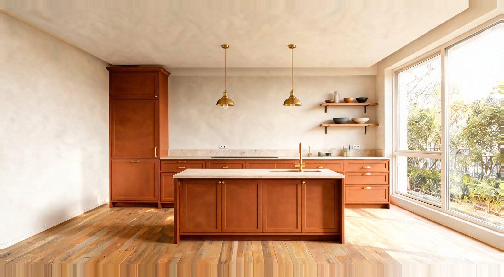
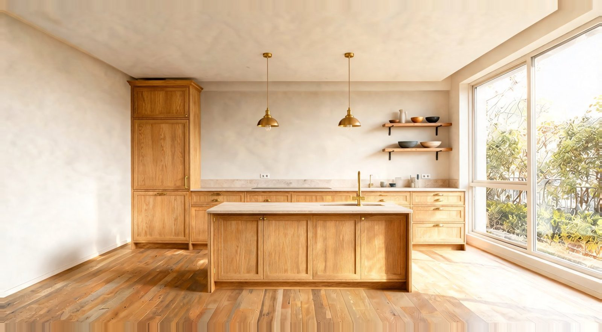
Classic Navy
How we work
Four visits, one kitchen.
Measure
We visit your home, measure every wall and talk through how you use your kitchen day to day.
Design
You get hand-drawn plans and real samples to hold, not just a screen.
Make
Every cabinet is built in our workshop from solid oak and birch ply.
Fit
Our own fitters install it, then the last coat of paint goes on in your home.
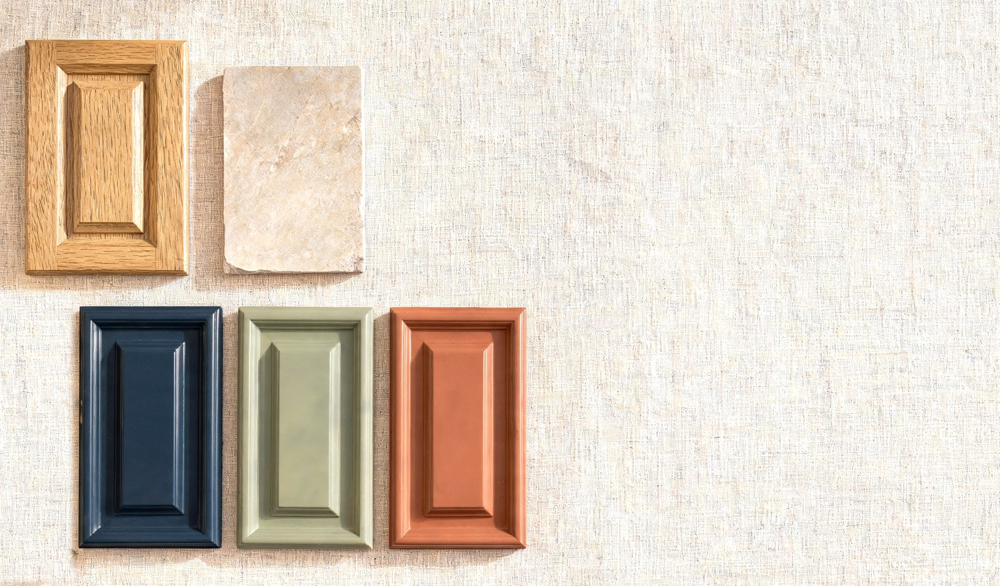
What it's made of
Things you can touch.
- DoorsSolid oak frames, painted or oiled by hand
- WorktopsHoned limestone or oiled oak
- HandlesUnlacquered brass that softens with use
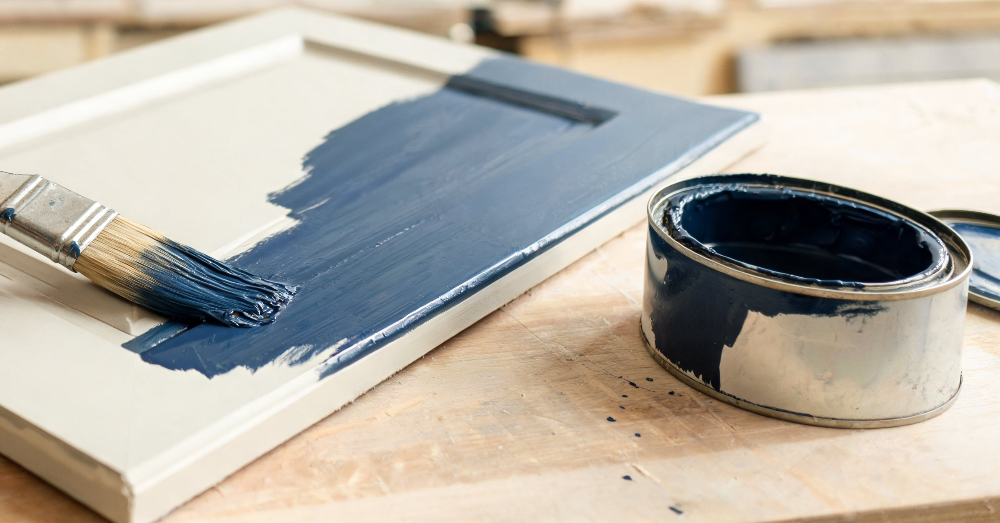
From the workshopPainted by hand, coat by coat.
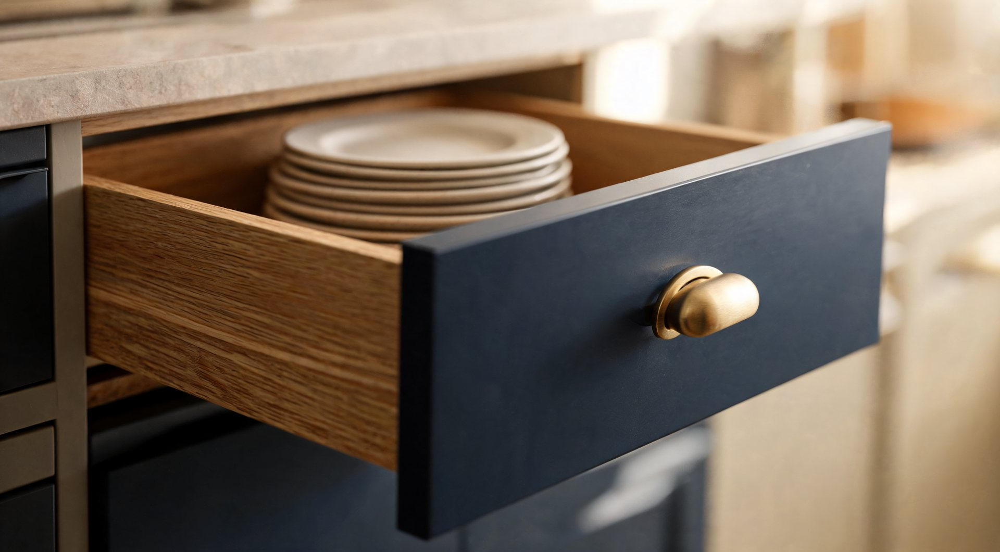
The detailsBuilt to be opened every day.
Every room asks for something different.
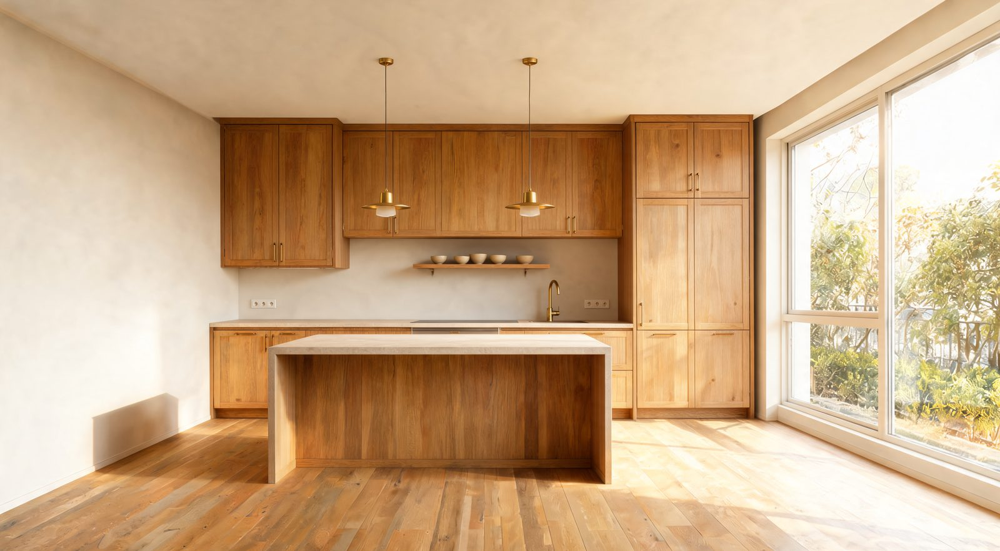
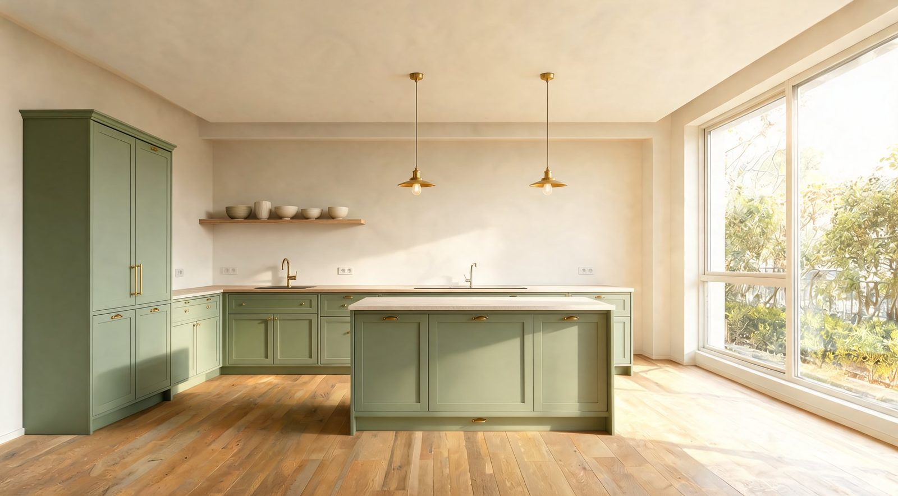
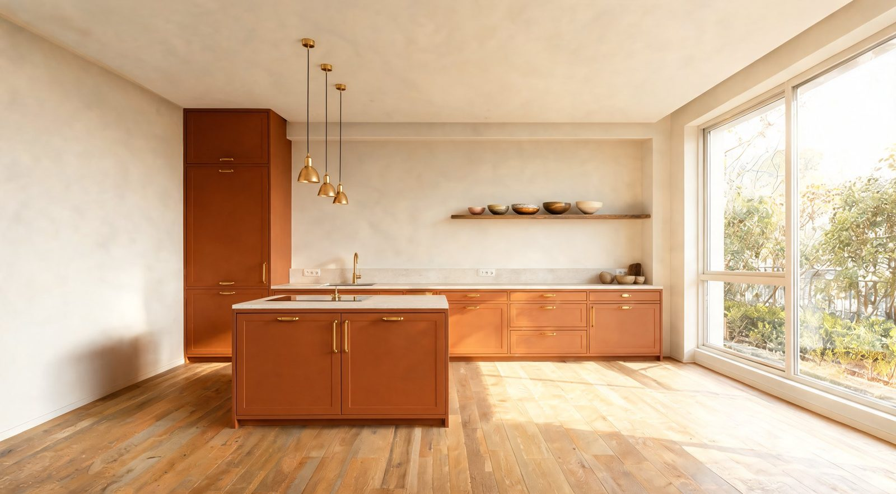
Start here
Book a home visit.
- Workshop
- Wren Yard, Norwich (fictional)
- Visits
- Within 30 miles of Norwich, free of charge
- Lead time
- Usually 10–14 weeks from design to fitting